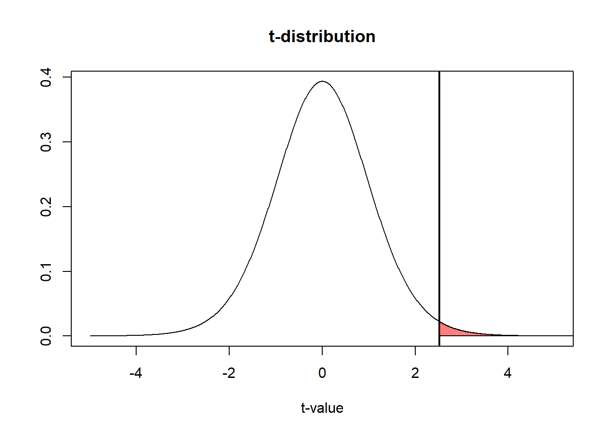

1.1 What is a p-value?
 Figure 1.1: Scientists have a tendency to worship p-values below a value of 0.05.
Figure 1.1: Scientists have a tendency to worship p-values below a value of 0.05.
When testing predictions in empirical research, researchers often report whether their results are statistically different from 0. For example, a researcher might be interested in whether the use of a cell-phone increases the likelihood of getting into a car accident compared to not using a cell phone. A researcher might ask one group of individuals to use cell phones while driving in a driving simulator, while a control group does not use cell phones. The researcher might predict cell phone users get into more accidents, and test this prediction by comparing whether the difference between the two groups in the experiment is statistically different from zero. This is typically referred to as null-hypothesis significance testing (NHST). The ‘significance’ part of this name is a misnomer: what we understand as the ‘significance’ of a finding in normal English depends on its theoretical or practical importance and has very little to do with statistics. Instead, we will therefore refer to such tests as ‘null-hypothesis testing’, and use ‘statistical difference’ for what is sometimes referred to in the literature as a ‘significant finding’ or a ‘statistically significant finding’.
Assume we ask two groups of 10 people how much they liked the extended directors cut version of the Lord of the Rings (LOTR) trilogy. The first group consists of my friends, and the second groups consists of friends of my wife. Our friends rate the trilogy on a score from 1 to 10. We can calculate the average rating by my friends, which is 8.7, and the average rating by my wife’s friends, which is 7.7. The difference is 1.
Table 1.1: Ratings for the Lord of the Rings extended trilogy by two groups of friends.
| Friends Daniel | Friends Kyra | |
|---|---|---|
| friend_1 | 9 | 9 |
| friend_2 | 7 | 6 |
| friend_3 | 8 | 7 |
| friend_4 | 9 | 8 |
| friend_5 | 8 | 7 |
| friend_6 | 9 | 9 |
| friend_7 | 9 | 8 |
| friend_8 | 10 | 8 |
| friend_9 | 9 | 8 |
| friend_10 | 9 | 7 |
To get these data in a data frame in R, we use the code:
friends <- c("friend_1", "friend_2", "friend_3", "friend_4", "friend_5", "friend_6", "friend_7", "friend_8", "friend_9", "friend_10")
friends_daniel <- c(9, 7, 8, 9, 8, 9, 9, 10, 9, 9)
friends_kyra <- c(9, 6, 7, 8, 7, 9, 8, 8, 8, 7)
df <- data.frame(friends, friends_daniel, friends_kyra)Let’s first look at the data by plotting it.

We can also summarise the data and look at the means, sd, and sample size per group:
Table 1.2: Summary statistics.
| friends | friends_daniel | friends_kyra |
|---|---|---|
| friend_1 | 9 | 9 |
| friend_2 | 7 | 6 |
| friend_3 | 8 | 7 |
| friend_4 | 9 | 8 |
| friend_5 | 8 | 7 |
| friend_6 | 9 | 9 |
| friend_7 | 9 | 8 |
| friend_8 | 10 | 8 |
| friend_9 | 9 | 8 |
| friend_10 | 9 | 7 |
We can see the groups overlap to a certain extent, but the mean ratings differ by 1 whole point, so there is also some non-overlap. The question we are no faced with is the following: Is the difference between the two groups just random variation, or can we conclude my friends really like the extended directors cut of the Lord of the Rings (LOTR) trilogy more than my wife’s friends?
In null-hypothesis testing we try to answer this question by calculating the probability of observing a specific, or more extreme, outcome of a test (i.e., a difference in movie ratings of 1 point or more) assuming that the null hypothesis is true (i.e., there is no real difference between how much my friends and my wife’s friends like the extended directors cut of LOTR). This probability is called the p-value.
The null-hypothesis assumes that if we would ask an infinite number of my friends and an infinite number of my wife’s friends how much they like LOTR, the difference between these huge groups is exactly 0. However, in a small sample of my friends and my wife’s friends (say 10 friends in each group), random variation is very likely to lead to a difference larger or smaller than 0. How do we know whether an observed difference is due to random variation around a difference of 0, or whether an observed difference is due to random variation around a real difference between our friends?
To answer this question we need to know is what constitutes a reasonable expectation about how much the differences between groups can vary, if we would repeatedly ask samples of groups of friends to rate LOTR. When we compare two groups, we use the means, standard deviations, and number of observations in each group to calculate the t-statistic.
With the means (M), standard deviations (SD) and sample size (N) for each of the two groups from the Table above we can examine the probability that the difference between the two groups is larger than 0, given the data we have available. This is done by calculating the t-statistic, which is related to a probability (a p-value) of getting the observed or a more extreme t-statistic in the t-distribution. The t-distribution describes samples drawn from a population. It is similar to the normal distribution (which describes the entire population). Because the t-distribution describes the probability density function for a specific sample, the shape depends on the sample size. The larger the sample, the more similar the t-distribution becomes to the normal distribution. Below, you can see the normal distribution (with M = 0 and SD = 1) in black, and the t-distribution for 10 and 5 degrees of freedom. We can see the t-distribution has somewhat thicker tails than the normal distribution.

Now we have a probability density function to compare our t-statistic against, all we need to do is to perform the t-test. R by default performs Welch’s t-test, which does not assume equal variances, instead of Student’s t-test, which does. This is a sensible default (Delacre et al., 2017Delacre, M., Lakens, D., & Leys, C. (2017). Why Psychologists Should by Default Use Welch’s t-test Instead of Student’s t-test. International Review of Social Psychology, 30(1). https://doi.org/10.5334/irsp.82).
##
## Welch Two Sample t-test
##
## data: rating by daniel_kyra
## t = 2.5175, df = 17.65, p-value = 0.02172
## alternative hypothesis: true difference in means is not equal to 0
## 95 percent confidence interval:
## 0.1642993 1.8357007
## sample estimates:
## mean in group friends_daniel mean in group friends_kyra
## 8.7 7.7The t-value is 2.5175. The t-test returns the probability of finding a difference as extreme, or more extreme, as the observed difference. We can graph the t-distribution (for df = 18) and a vertical line at t = 2.5175 in R using:
x <- seq(-5, 5, length = 1000)
plot(x, dt(x, df = 18), col = "black", type = "l",
xlab = "t-value", ylab = "", main = "t-distribution")
abline(v = 2.5175, lwd = 2)
x <- seq(2.5175, 5, length = 100)
z <- (dt(x, df = 18))
polygon(c(2.5175, x, 8), c(0, z, 0), col = rgb(1, 0, 0, 0.5))
Let’s recall the definition of a p-value: A p-value is the probability of the observed or more extreme data, assuming the null hypothesis is true. The assumption that the null-hypothesis is true is represented by the t-distribution being centered around 0, which is the t-value if the difference between the two groups is exactly 0. The probability of an outcome as high, or higher, as the one observed, is indicated by the blue area. This is known as a one-tailed probability. It is equivalent to the probability that my friends like the extended directors cut of LOTR more than my wife’s friends.
However, that wasn’t my question. My question was whether my friends and my wife’s friends would differ in how much they liked the LOTR movies. It would have been just as interesting to find my friends liked the movies less than my wife’s friends. Since many of my friends have read the book more than 20 times, and it’s often the case that people like the book better than the movie, an opposite outcome would have been just as likely. Furthermore, there has only been one person in my family who has been to a marathon movie night in the cinema when the third LOTR movie came out, and it wasn’t me. So let’s plot the probability that we found a positive or negative difference, as or more extreme as the one observed (the two-tailed probability). Let’s plot this:
x <- seq(-5, 5, length = 100)
plot(x, dt(x, df = 18), col = "black", type = "l", xlab = "t-value", ylab = "", main = "t-distribution")
abline(v = 2.5175, lwd = 2)
abline(v = -2.5175, lwd = 2)
abline(v = -2.100922, col = "grey", lty = 3)
abline(v = 2.100922, col = "grey", lty = 3)
x <- seq(2.5175, 5, length = 100)
z <- (dt(x, df = 18))
polygon(c(2.5175, x, 8), c(0, z, 0), col = rgb(1, 0, 0, 0.5))
x <- seq(-5, -2.5175, length = 100)
z <- (dt(x, df = 18))
polygon(c(-8, x, -2.5175), c(0, z, 0), col = rgb(1, 0, 0, 0.5))
I have plotted two critical values by horizontal grey dotted lines, which indicate the critical t-values for a difference to be significant (p < .05) for a t-distribution with 18 degrees of freedom. We can see that the observed difference is more extreme than the minimal critical values. However, we want to know what the exact probability of the two blue areas under the curve is. The t-test already provided us with the information, but let’s calculate it. For the left tail, the probability of a value smaller than t = -2.5175 can be found by:
## [1] 0.01075515If we would simply change the sign on -2.5175, we would get the probability of a value smaller than 2.5175. What we want is the probability of a value higher than that, which equals:
## [1] 0.01075515This value is identical to the probability in the other tail because the t-distribution is symmetric. If we add these two probabilities together, we get p = 0.02151. This is the same as the p-value provided by the t-test we performed earlier returned.
For a video lecture on this topic, see:
Page built: 2020-08-15